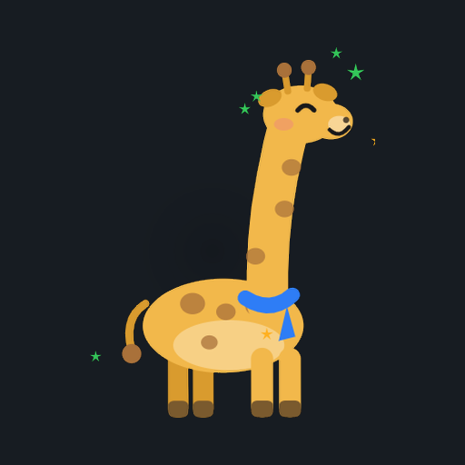
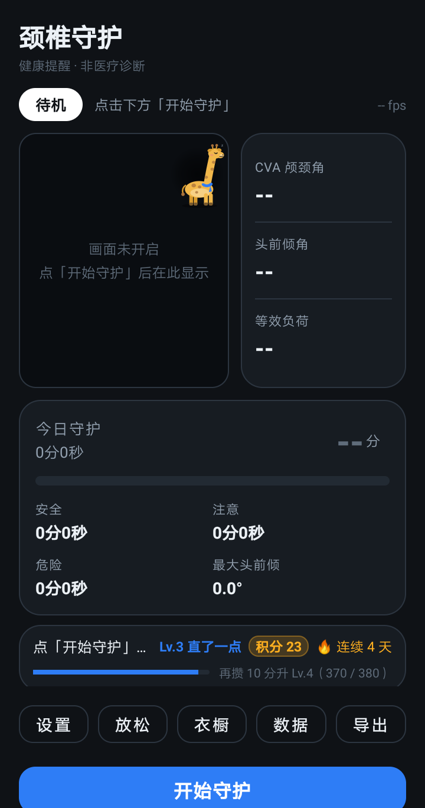
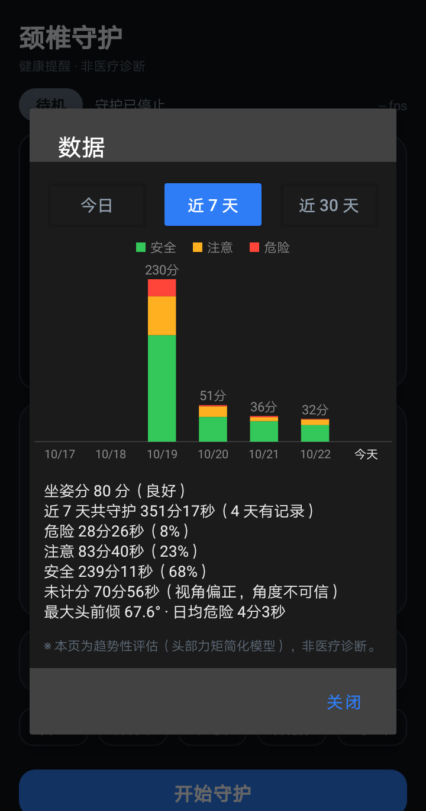
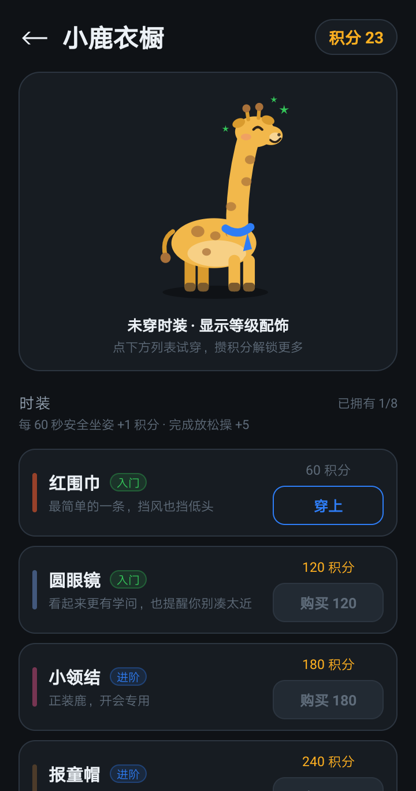
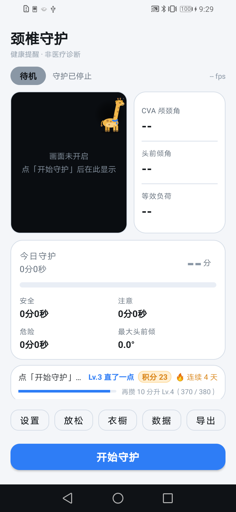

用前置摄像头实时监测坐姿，低头太久会提醒你。
所有计算在手机本地完成，不联网、不上传。
网页版跑的是同一个算法：摄像头画面只在本机处理，实时算出 CVA 颈颅角、头前倾角与等效负荷，带三级判定、今日统计和近 7 天趋势。需要 Chrome / Edge，并且必须是 https 或 localhost 才能拿到摄像头。
MediaPipe 姿态模型本机推理，约 3 fps，估算 CVA 颈颅角与头前倾角。
安全 / 注意 / 危险；连续低头、累计低头、长时间工作疲劳三种触发。
收下巴动作引导，带示范动画与幅度评分。
今日 / 近 7 天 / 近 30 天分级堆叠图，支持 CSV 导出。
健康坐姿换积分，解锁小鹿的 8 件时装。
跟随系统或手动切换，夜间不刺眼。




1. 从 Releases 页面下载 颈椎守护-x.y.z-release.apk
2. 手机上点开安装（需允许「安装未知来源应用」）
3. 授予相机权限 → 点「开始守护」
首次打开建议把手机侧放，镜头能拍到侧脸与肩膀；正面对着镜头时测不出头前倾，App 会标注「角度不可信」且不计分。